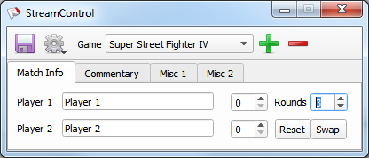

Khách quan mà nói, stream cây nhà lá vườn của Saigon Cup từ 2017 tới nay dòm khá là tử tế:
Trong bài này mình sẽ giải thích cách Saigon FGC chạy stream, hi vọng sẽ dụ được đứa khác làm culi cho saigon cup 2021 tạo cảm hứng cho nhiều người chạy stream game đối kháng hơn.
Đối với casual streamer, thật ra chỉ cần có 1 PC với card đồ họa rời không quá cũ là đã đủ để vừa game vừa stream. Mình từng thử stream Tekken 7 ở nhà với 1 con GTX 950, 60fps ổn định.
Tuy nhiên, khi chạy giải bạn sẽ cần máy riêng cho người chơi và người stream, vì vậy bạn cần thêm thiết bị bắt tín hiệu HDMI (capture device) truyền vô máy tính qua cổng USB, và cũng cần luôn HDMI splitter để xuất ra cả màn hình cho người chơi lẫn capture device. SGC gần đây nhất xài:
Vụ capture device là vấn đề nhức đầu từ thời mình mới vô: lúc đó hội chỉ có con Avermedia được Zhi cho từ thời cổ đại SF4. Cái của nợ đó cực kỳ kén config. Mãi tới sau này Kiad chơi lớn, order con Elgato từ Úc về cho hội mượn thì stream khỏe hơn hẳn (bây giờ thì VN bán cái này nhan nhản rồi, vẫn mắc nhưng ít ra yên tâm hơn tự ship).
Thời gian gần đây xuất hiện một capture device TQ giá cực rẻ: khoảng $11 trên aliexpress hoặc 290k trên nshop:
Mình mua từ aliexpress, đã test thử và đúng là nó hỗ trợ tín hiệu 720p60fps hoặc 1080p30fps ngon lành. Có thể Saigon Cup 2021 sẽ xài con này.
Saigon Cup trước giờ luôn stream 720p60fps (6000kbps), vì nếu stream fighting game ở 30fps nhìn sẽ rất tệ, và mình không tin tưởng đường truyền internet ở các nơi tổ chức giải sẽ đủ sức gánh bitrate cho stream 1080p60fps một cách ổn định.
Sau khi mua con 720p60 rồi mình mới phát hiện ra nó còn có phiên bản USB 3.0, gánh được 1080p60fps! Nếu có ai sẵn sàng chuột bạch thì nhớ chia sẻ kết quả trên group nhé.
Ngoài ra đã stream giải đấu thì phải có ít nhất 1 camera quay mặt người chơi. Nhà giàu sẽ chọn sony handicam, ít giàu hơn nhưng vẫn muốn đẹp thì có thể mượn máy DSLR của mấy bạn đang tuổi đam mê nhiếp ảnh, gắn bộ adapter nguồn điện + HDMI out + capture device là có thể xuất vô máy PC stream: tham khảo ở đây. Còn nếu nghèo (như SGC) thì có thể mua webcam Logitech C920, hay còn gọi là Youtube Influencer Starter Pack.
TODO: microphone + mixer
SGC xài OBS để stream, đơn giản vì nó miễn phí và là một trong những phần mềm stream phổ biến nhất, nên có hàng tỷ hướng dẫn trên youtube, các bạn có thể tự nghiên cứu.
Phần thú vị hơn là bảng điểm, hay còn gọi là scoreboard overlay. Phần mềm scoreboard nổi tiếng nhất cho game đối kháng là StreamControl của Farpnut:

Tuy nhiên mình cảm thấy xài chưa thuận tiện lắm nên tự viết đồ cây nhà lá vườn:

Ưu điểm của ORTS so với StreamControl:
Năm nay nghe phong phanh Smash.gg đòi đổi API nhưng vì SGC ’20 bị covid body rồi nên mình cũng chả buồn cập nhật. Chắc đầu năm 21.
{kind=link}